Objectives
In this Exercise you will learn how to Unsubscribe from Juniper Mist locations to stop data collection, and how to Unassign Maximo Manage locations.
Before you begin:
This Exercise requires that you have:
- Completed the pre-requisites required for all labs
- Completed the previous exercises
Unsubscribing from Juniper Mist Locations
Unsubscribing from a Juniper MIST Floor
To stop data collection for a floor, unsubscribe from it first:
- The Unsubscribe option is available only when the MIST Floor is subscribed.
-
From the Action menu (⋮) for the required MIST Floor, select Unsubscribe.
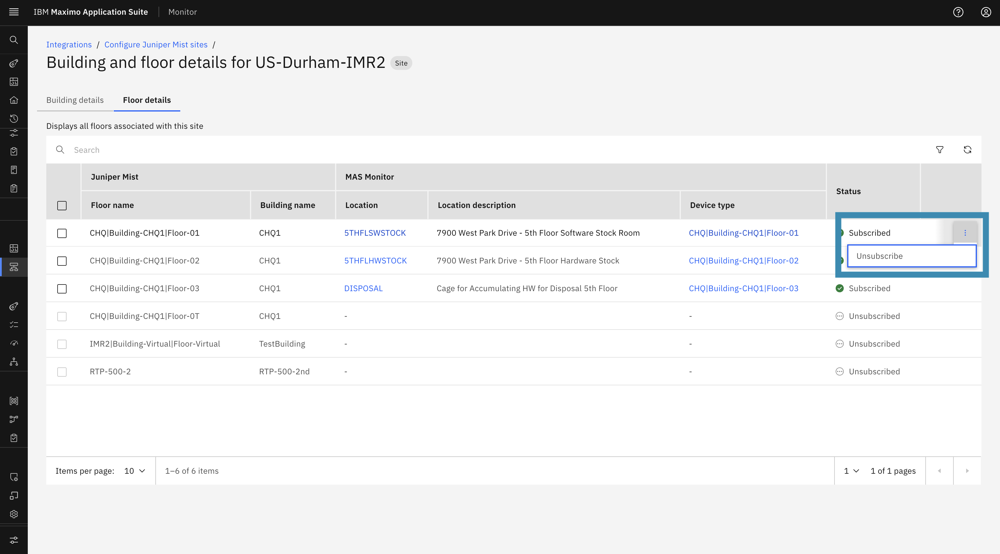
-
A confirmation dialog appears. Click Unsubscribe to confirm.
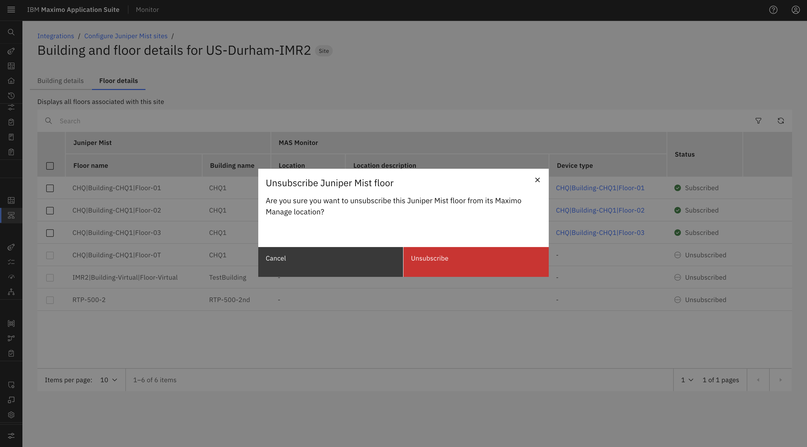
-
Unsubscribing stops the flow of data from Juniper MIST to Maximo Monitor.
-
Once unsubscribe is completed successfully, the subscription status of the MIST Floor is updated to
Unsubscribed.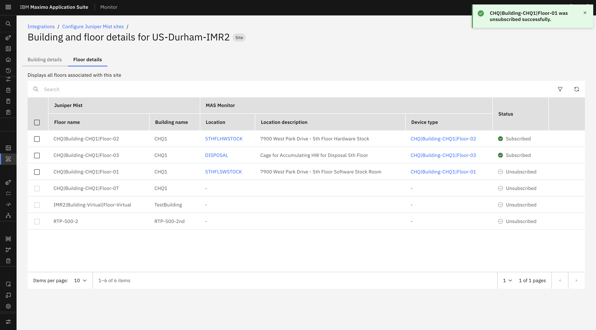
Unsubscribing from a Juniper MIST Building
- The Unsubscribe option is available only when a Maximo Manage Location is assigned to the MIST Building.
-
From the Action menu (⋮) for the required MIST Building, select Unsubscribe.
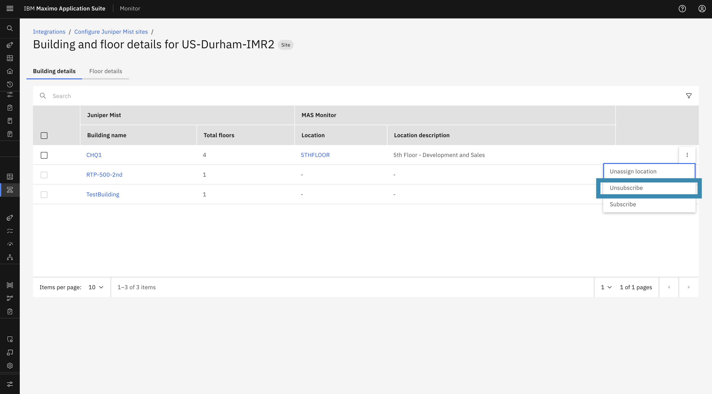
-
A confirmation dialog appears. Click Unsubscribe to confirm.
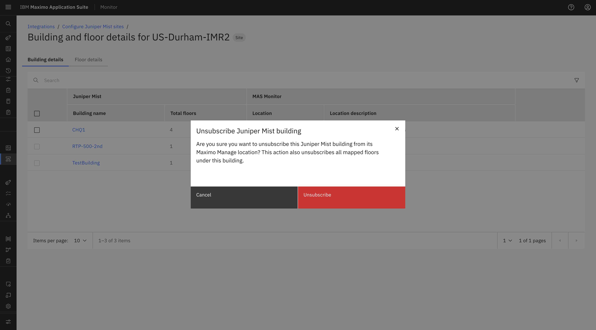
-
Unsubscribing stops the flow of data from the Juniper Building to Maximo Monitor.
- During the unsubscribe process, the system checks whether a Maximo Manage Location is assigned to each Floor:
- Floors with an assigned location are unsubscribed successfully.
- Floors without an assigned location are not unsubscribed and are reported as errors.
- If only some Buildings or Floors are unsubscribed successfully, the Building is marked as
Partially Unsubscribed. -
If an error or partial unsubscribe occurs, the confirmation dialog provides an option to download the error file for review.
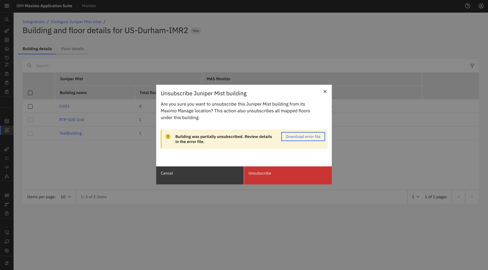
-
Once unsubscribe is completed successfully, the subscription status of the applicable MIST Floors is updated to
Unsubscribed.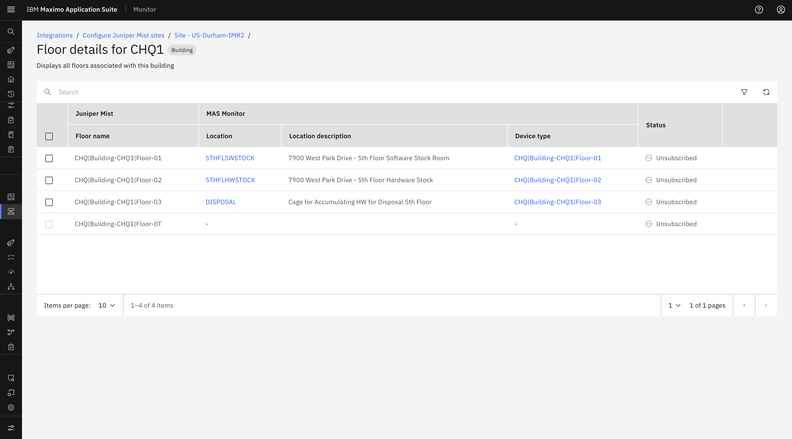
Unsubscribing from a Juniper MIST Site
- To stop data collection for a site, unsubscribe from it first.
- The Unsubscribe option is available only when a Maximo Manage Location is assigned to the MIST Site.
-
From the Action menu (⋮) for the required MIST Site, select Unsubscribe.
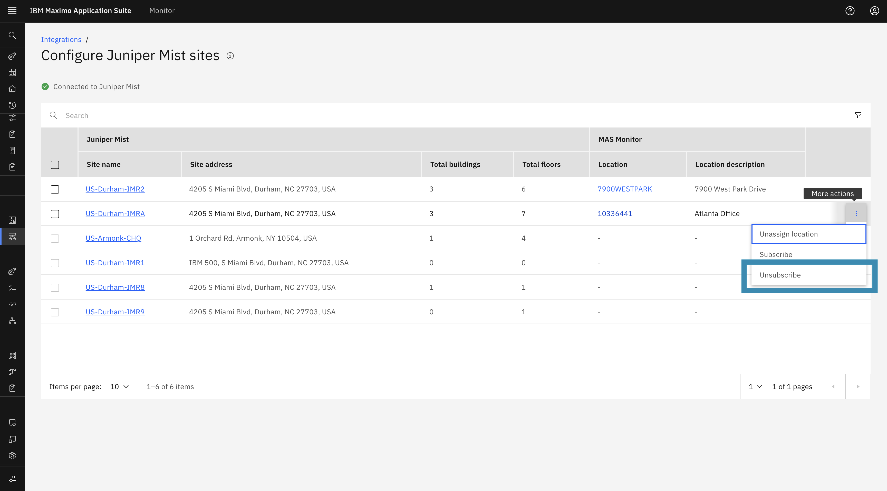
-
A confirmation dialog appears. Click Unsubscribe to confirm.
-
Unsubscribing stops the flow of data from Juniper MIST to Maximo Monitor.
- During the unsubscribe process, the system checks whether a Maximo Manage Location is assigned to each Building and Floor:
- Buildings and Floors with an assigned location are unsubscribed successfully.
- Buildings and Floors without an assigned location are not unsubscribed and are reported as errors.
- If only some Buildings or Floors are unsubscribed successfully, the Site is marked as
Partially Unsubscribed. -
If an error or partial unsubscribe occurs, the confirmation dialog provides an option to download the error file for review.
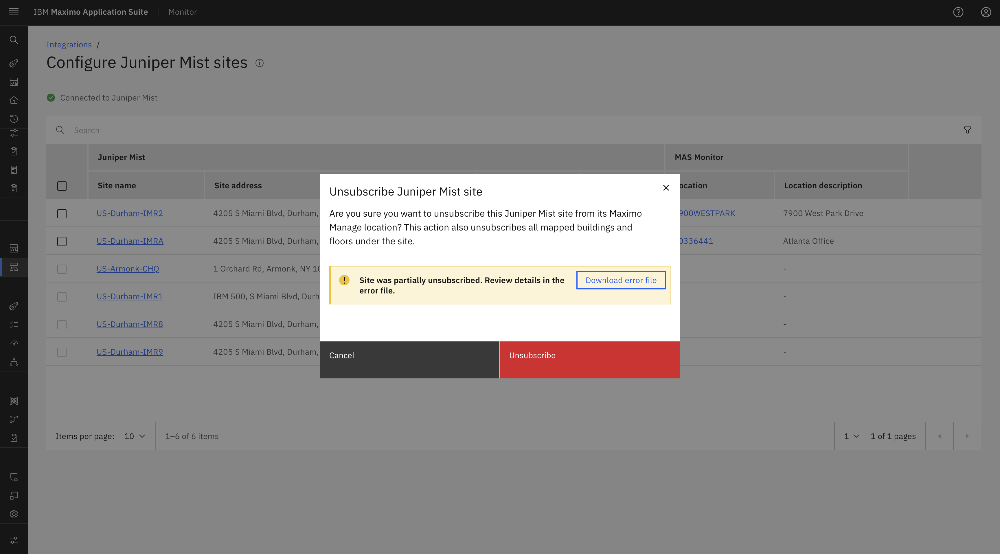
-
Once unsubscribe is completed successfully, the subscription status of the applicable MIST Floors is updated to
Unsubscribed.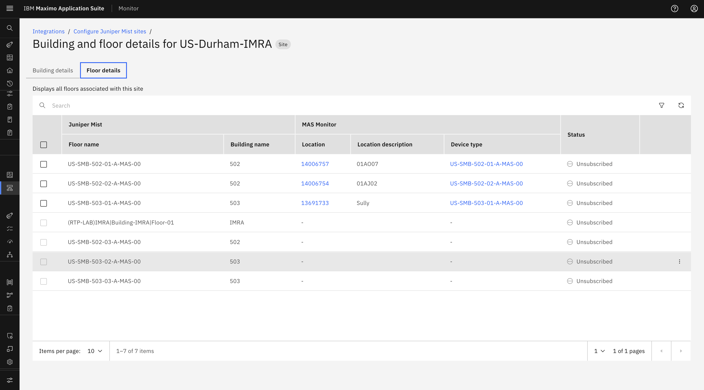
Unassigning Maximo Manage Locations
Unassign a Maximo Manage Location from a MIST Floor
-
From the Action menu (⋮) for the required MIST Floor, select Unassign Location.
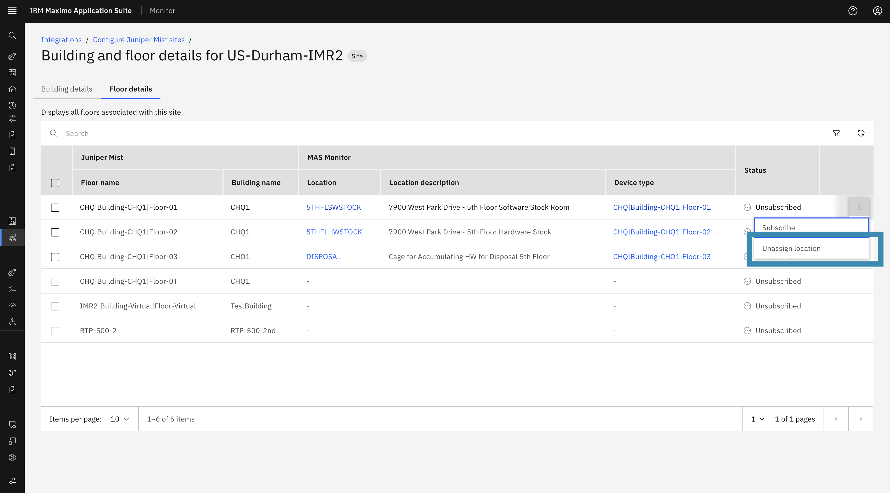
-
A confirmation dialog appears to confirm the removal of the Maximo Manage Location from the Floor.
- The dialog also provides an option to delete the calculated metrics associated with the location.
-
Click Unassign Location to complete the action.
-
The selected Maximo Manage Location is successfully unassigned from the corresponding MIST Floor.
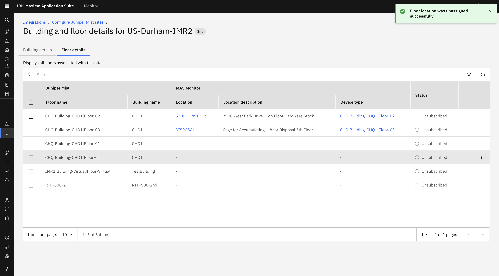
Unassign a Maximo Manage Location from a MIST Building
-
From the Action menu (⋮) for the required MIST Building, select Unassign Location.
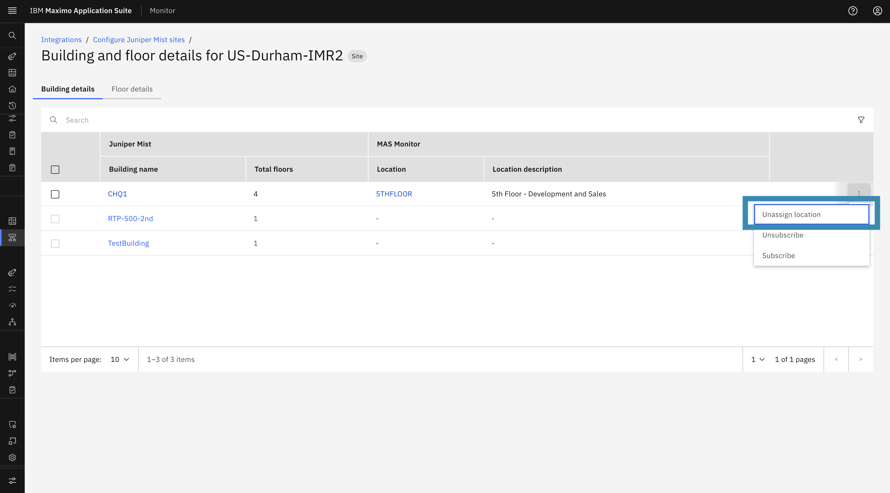
-
A confirmation dialog appears to confirm the removal of the Maximo Manage Location from the Building.
- The dialog also provides an option to delete the calculated metrics associated with the location.
-
Click Unassign Location to complete the action.
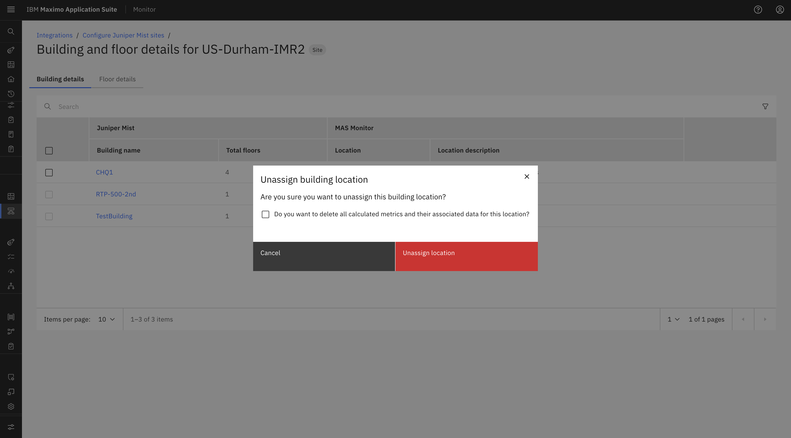
-
The selected Maximo Manage Location is successfully unassigned from the corresponding MIST Building.
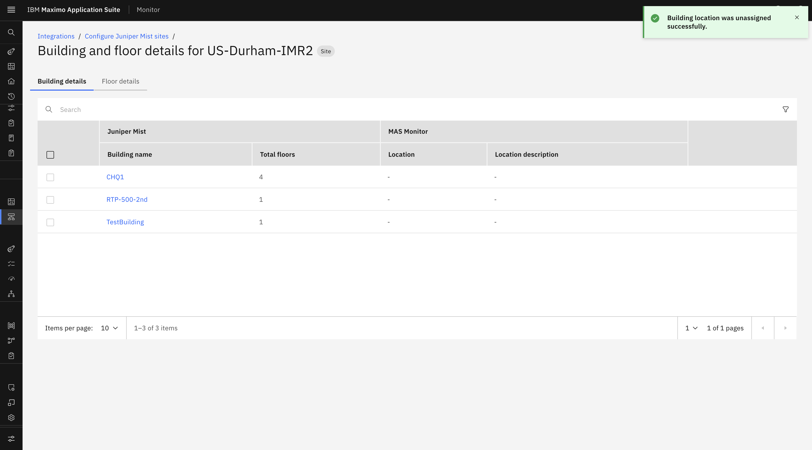
Dependency Rule
If any associated Floor still has a Maximo Manage Location assigned, the system will not allow the Building-level location to be unassigned and will display an error.
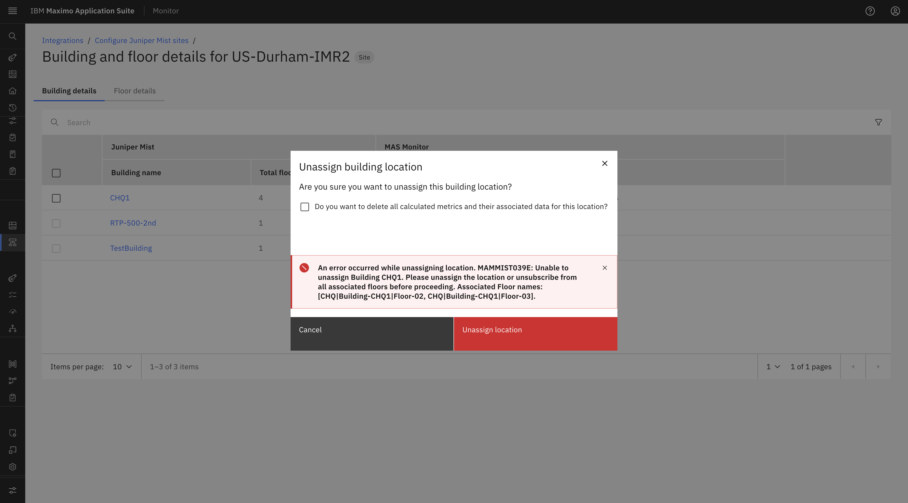
Unassign a Maximo Manage Location from a MIST Site
-
From the Action menu (⋮) for the required MIST Site, select Unassign Location.
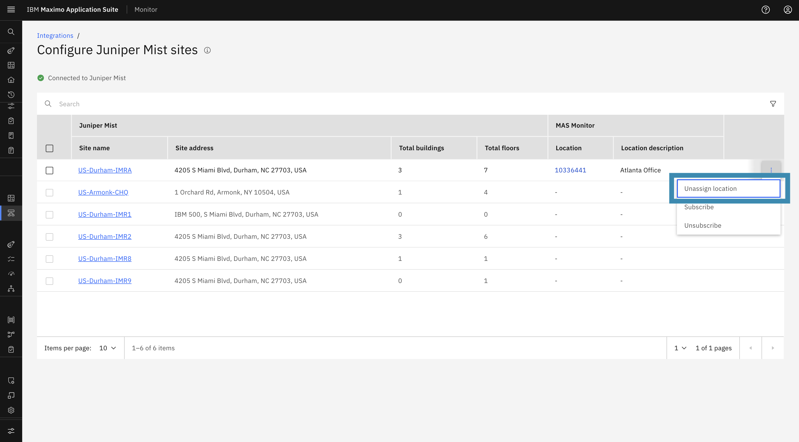
-
A confirmation dialog appears to confirm the removal of the Maximo Manage Location from the Site.
- The dialog also provides an option to delete the calculated metrics associated with the location.
-
Click Unassign Location to complete the action.
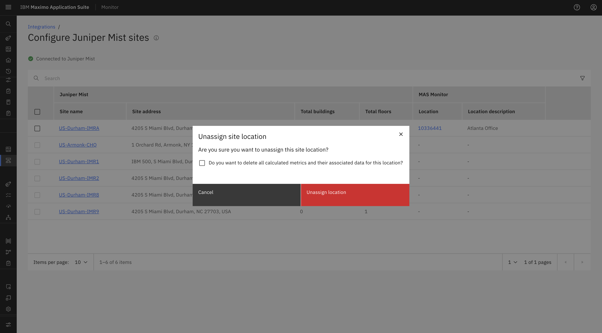
-
The selected Maximo Manage Location is successfully unassigned from the corresponding MIST Site.
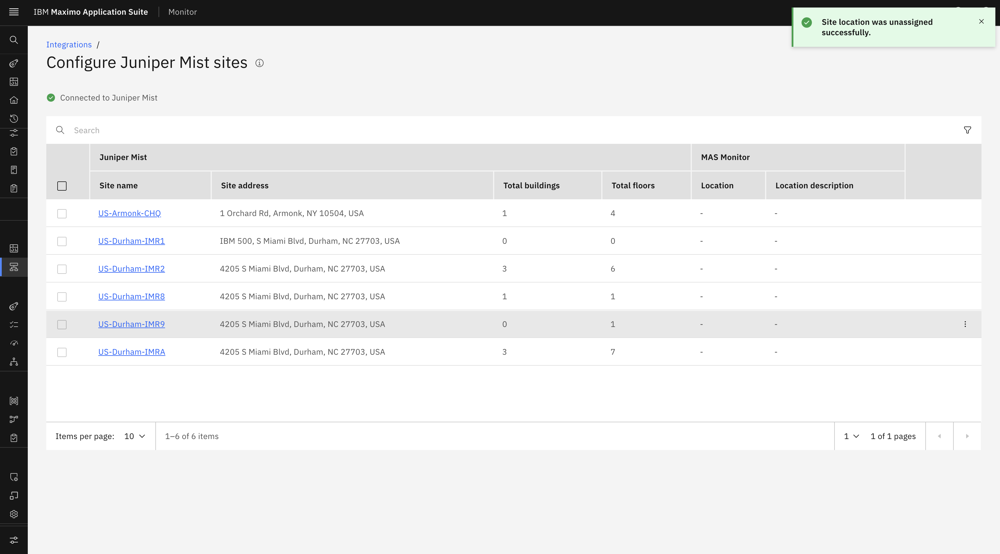
Dependency Rule
If any associated Building or Floor still has a Maximo Manage Location assigned, the system will not allow the Site-level location to be unassigned and will display an error.